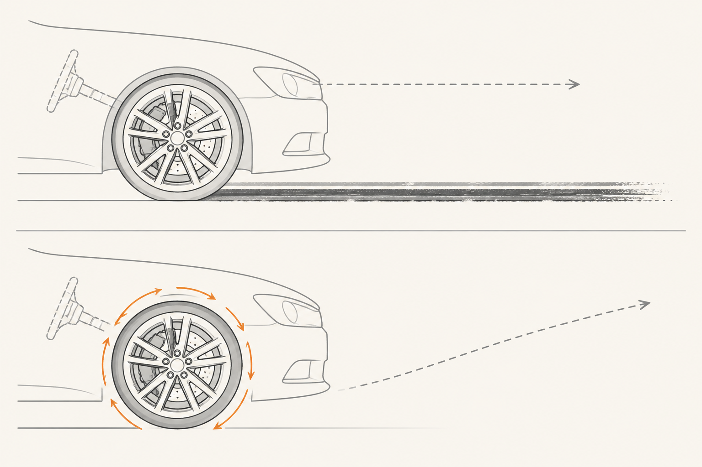

ABS y asistencias modernas: la electrónica que supervisa
Hasta aquí, todo lo que has visto es mecánica: hidráulica, geometría, materiales. La frenada moderna añade una capa más, una capa que no aprieta nada por sí misma pero decide cuándo y cuánto apretar cada rueda. Es la electrónica de seguridad. Y la pieza fundadora — la abuela de todo lo que vino después — es el ABS.
El problema que vino a resolver
Antes del ABS, frenar muy fuerte tenía un riesgo conocido: bloquear las ruedas. Una rueda bloqueada deja de girar y empieza a deslizar como un patín sobre el asfalto. Y aquí está la sorpresa: una rueda que desliza no se detiene mejor que una que rueda. De hecho, generalmente peor, porque la fricción dinámica del deslizamiento es menor que la estática del rodaje. Pero el problema gordo es otro:
Una rueda bloqueada no responde a la dirección. Si las ruedas delanteras están bloqueadas, mover el volante no sirve: el coche sigue recto, deslizando, hasta que pare. Esto es lo que mataba a la gente en frenadas de emergencia: chocaban contra lo que intentaban esquivar porque ya no podían dirigir.
El ABS resuelve precisamente eso. No promete que frenes en menos metros (a veces frena en más). Promete algo mucho más valioso: que puedas seguir esquivando mientras frenas a fondo.
Cómo lo hace
El ABS (Sistema Antibloqueo de Frenos) tiene tres ingredientes:
1) Un sensor de velocidad en cada rueda. Mide la rotación a 1.000 veces por segundo.
2) Una centralita que vigila esos cuatro sensores. Si detecta que una rueda está a punto de bloquearse — gira mucho más lento que las demás — toma una decisión rápida.
3) Una válvula hidráulica en cada rueda que puede cortar momentáneamente la presión hidráulica que tú mandas con el pedal.

El ciclo es brutal de simple: si una rueda va a bloquearse, la válvula suelta presión durante una fracción de segundo. La rueda vuelve a girar. Inmediatamente la válvula vuelve a aplicar presión. Frena, suelta, frena, suelta. Hasta 15 veces por segundo. Tan rápido que tú no puedes hacerlo con el pie ni queriendo.
Lo que el conductor siente — el pedal vibrando, un zumbido — es exactamente esa pulsación. La centralita está moviendo válvulas a alta frecuencia y eso se transmite a la columna del pedal.
Más allá del ABS: la familia de asistencias
El ABS abrió el camino. Sobre los mismos sensores y la misma centralita, los fabricantes fueron añadiendo más capas de inteligencia. Hoy un coche moderno tiene varias asistencias trabajando en silencio:
Todas estas asistencias usan los mismos sensores de rueda del ABS. La inversión inicial fue la grande; añadir capas encima salió relativamente barato. Por eso un coche moderno medio lleva todo lo de arriba aunque su ficha técnica solo destaque dos o tres siglas.
Esa vibración es el ABS funcionando exactamente como debe. La centralita está abriendo y cerrando válvulas hidráulicas a alta frecuencia, y eso se transmite al pedal. No es un defecto, es la señal de que el sistema te ha protegido.
El instinto natural del cliente al sentirlo por primera vez es levantar el pie. Es exactamente lo contrario de lo que debe hacer: hay que seguir pisando a fondo y dirigir el coche a donde quiere ir. La explicación que mejor funciona: "el coche está cicleando los frenos a quince veces por segundo para que tú puedas seguir esquivando con el volante. Tú pisa y dirige, el coche se ocupa del resto."
La frase que te llevas
El ABS no acorta la frenada: te deja seguir dirigiendo cuando frenas a fondo. Sus primos (ESP, EBD, BAS, Hill Holder, AEB) usan los mismos sensores para resolver problemas distintos. Y la vibración del pedal es la señal de que están trabajando — no de que algo está mal.
Hasta aquí, toda nuestra frenada ha terminado en calor disipado al aire. Pero hay un mundo donde esa energía no se quema: se recupera. Eso es la regenerativa, y le toca su píldora.
fácil ¿Qué prometía el ABS exactamente cuando se inventó? ¿Y qué NO prometía?
Promete: que las ruedas no se bloqueen al frenar a fondo, y por tanto que puedas seguir dirigiendo el coche con el volante mientras frenas.
NO promete: que frenes en menos metros. De hecho, en algunas superficies (tierra suelta, nieve profunda) el ABS puede alargar ligeramente la distancia de frenada — porque una rueda bloqueada apila tierra delante y "ayuda" a parar. Pero a cambio te deja la dirección operativa, y eso casi siempre vale más que unos metros menos.
medio El ABS y el ESP usan los mismos sensores. ¿Cuál es la diferencia funcional entre uno y otro?
Los sensores son los mismos (uno por rueda, midiendo velocidad de rotación), pero responden a problemas distintos:
ABS actúa cuando una rueda está a punto de bloquearse en frenada. La solución es ciclear la presión: frenar-soltar-frenar-soltar, decenas de veces por segundo, en esa rueda.
ESP actúa cuando el coche derrapa, hace una trayectoria distinta a la que pide el volante (por ejemplo, sobreviraje en curva mojada). La solución no es soltar, sino al contrario: frenar una rueda específica (típicamente la de fuera de la curva) para reorientar el coche y devolverlo a su trayectoria.
El ABS gestiona frenada vs bloqueo. El ESP gestiona trayectoria vs deriva. Mismas piezas, problemas distintos.
reto Un cliente con coche reciente entra al concesionario diciendo: "Frené a fondo en una rotonda, el pedal me dio un golpe rarísimo y casi suelto. ¿Lo reviso?". ¿Cómo le explicas?
Lo primero: tranquilizarle sin minimizar. Lo que sintió tiene nombre y es el ABS activándose. La sensación de "golpe" en el pedal es el sistema cicleando la presión hidráulica para que sus ruedas no se bloqueen. Eso significa que el sistema le acaba de proteger.
Lo segundo: el aprendizaje útil. Si vuelve a pasar — y le va a pasar antes o después en mojado — la respuesta correcta no es soltar, es seguir pisando con firmeza y mover el volante hacia donde quiera ir. El coche está liberando la rueda momentáneamente para que él pueda esquivar. "Pise y dirija; el resto lo hace el coche."
Lo tercero: la oferta. Si quiere quedarse tranquilo, lo revisamos sin coste para confirmar que todo está perfecto. Casi siempre lo está. Pero esa revisión tiene valor CX por sí sola: el cliente se va sintiendo cuidado, no despachado. Y la próxima vez que sienta el ABS, ya no se asusta — lo reconoce.